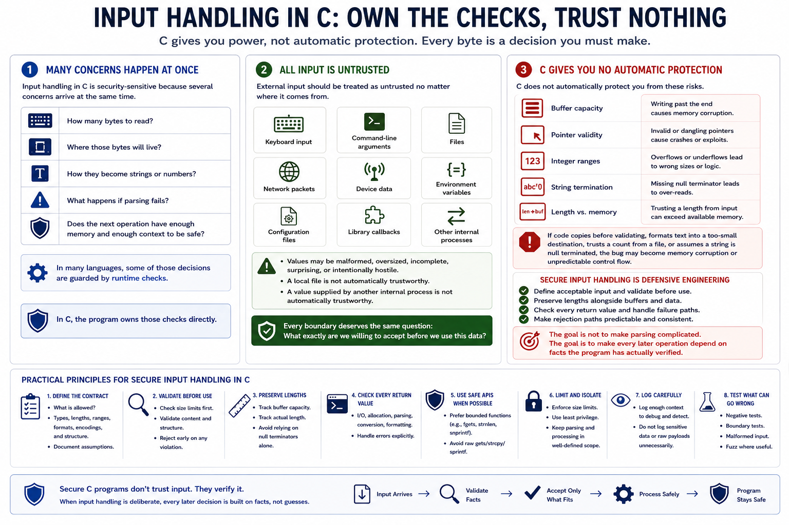

Why Input Handling Is Different in C
Connecting to LMS... Progress: in progress

Narration
Input handling in C is security-sensitive because several concerns arrive at the same time. The program is not just deciding whether a value looks acceptable. It is also deciding how many bytes to read, where those bytes will live, how they become strings or numbers, what happens if parsing fails, and whether the next operation has enough memory and enough context to be safe. In many languages, some of those decisions are guarded by runtime checks. In C, the program owns those checks directly.
External input should be treated as untrusted no matter where it comes from. Keyboard input, command-line arguments, files, network packets, device data, environment variables, configuration files, and library callbacks can all contain values that are malformed, oversized, incomplete, surprising, or intentionally hostile. A local file is not automatically trustworthy. A value supplied by another internal process is not automatically trustworthy. Every boundary deserves the same question: what exactly are we willing to accept before we use this data?
C does not automatically protect buffer capacity, pointer validity, integer ranges, string termination, or the relationship between a length field and the actual memory available. If code copies before validating, formats text into a too-small destination, trusts a count from a file, or assumes a string is null terminated, the bug may become memory corruption or unpredictable control flow. Secure input handling is therefore a defensive engineering discipline. Define acceptable input, validate before use, preserve lengths alongside buffers, check every return value, and make rejection paths predictable. The goal is not to make parsing complicated. The goal is to make every later operation depend on facts the program has actually verified.